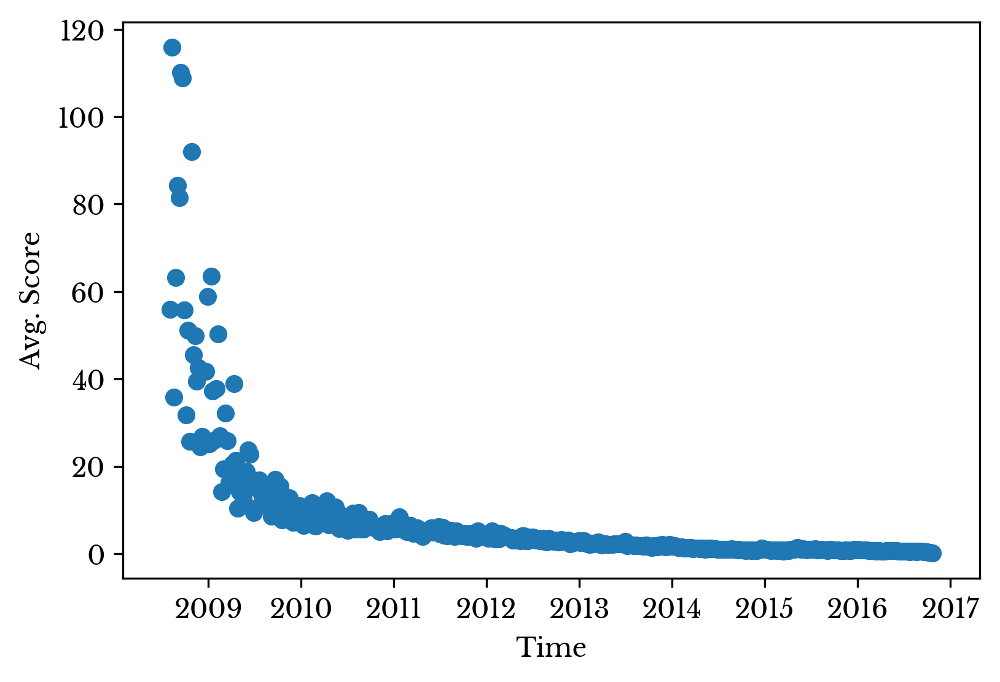

A Look at Stack Overflow Questions about Python
Mon, 05 Mar 2018
Computer Science, Data Science, Data Visualization, Python, Software, Stack Overflow, Wordcloud
There is a
dataset on Kaggle that contains questions taken from Stack Overflow about the Python programming language. This post briefly explores portions of the dataset.
The number of questions per week regarding Python has been steadily growing over the past decade. The number of questions has increased from about 10 per week in 2008 to about 3000 towards the present.
Figure 1: Number of Questions per Week
A histogram of the question scores is constructed. As seen in Figure 2, the vast majority of questions receive little to no upvotes. If you have ever spent hours typing up an in-depth question only to watch it fall flat, fear not! You are not alone.
Figure 2: Histogram of Question Scores
If you primarily access Stack Overflow questions from search engine results, this result may seem counter-intuitive. This seeming discrepancy is known as
survivorship bias. Unpopular questions do not appear in search results and so it is difficult to estimate their number.
So how then to have a successful post? One potentially good approach is to go back in time!

Figure 3: Average Question Score over Time
Taking the scores and grouping then by week, the average weekly score for Python questions declines over time. The older questions have had more opportunity to receive upvotes. But, the same can be said about downvotes!
Another way to improve your chances is to craft a title with a specific length. Figure 4 shows average score plotted against title length.
Figure 4: Question Score and Title Length
It appears that questions having a title with roughly 30 to 40 characters perform better on average. Longer titles perform worse on average. The longest title has 172 characters and the corresponding question has a score of 1 (no upvotes or downvotes).
The distribution for the length of question bodies is shown in Figure 5. The distribution is left skewed.
Figure 5: Distribution of Question Body Length
The length of the body has less of a correspondence with score. Often times short questions can have large blocks of code or data tables. The question with the longest body has 48242 characters. However, the majority of these characters comes from two large data tables.
Figure 6: Python Question Wordcloud
Finally, a wordcloud is constructed from the text. The result is shown in Figure 6.